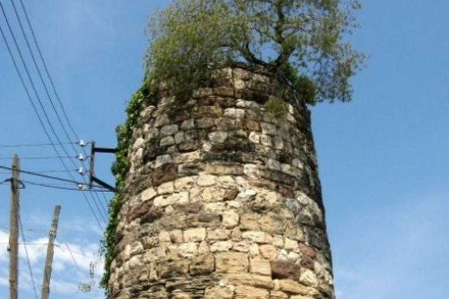

Visita · Vallirana
Les dues torres medievals que es conserven al veïnat de la Llibra, juntament amb les restes de murs i canalitzacions trobats ai seu costat, deurien pertànyer al rec dels Molins de la Llibra ,…